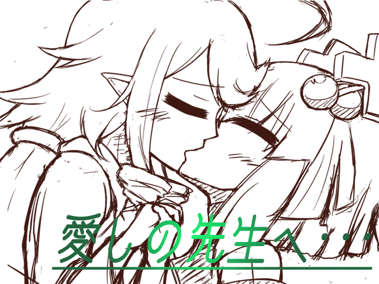

 |
|
| 作者：徳明 | |
| ジャンル：俺得百合erg | |
| ツクール：エロゲツクール2000 | |
| 作者コメント： いつも通りのガバガバストーリーでサッと遊びたい人にオススメなあっさり百合ergです。 病弱で殆ど病院の外へ出た事が無い単体風魔法の具現化・ウィンドⅠ。 主治医である単体回復魔法の具現化・ヒールⅢ。 無愛想な一面もあるが、優しく、自分の為に尽くしてくれるヒールⅢに対し ウィンドⅠは並々ならぬ感情を抱いていた。 そんなヒールⅢが突如自分より弱い存在になってしまった時、ウィンドⅠが取った行動とは……。 このergには以下の表現が含まれました。 ・たまにはロリもいいよね！ ・女の子同士 ・ロリ化 |
|
| 管理人コメント： いくらロリ化したとしてもウィンドⅠより弱い存在にはそうそうならないのでは！？ |
|
| ダウンロード(4.68MB) / 感想掲示板 |
|
| 前の作品 / 次の作品 / TOPへ戻る | |